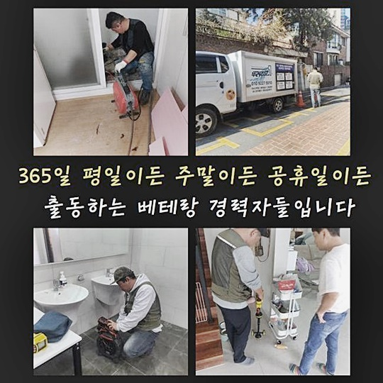
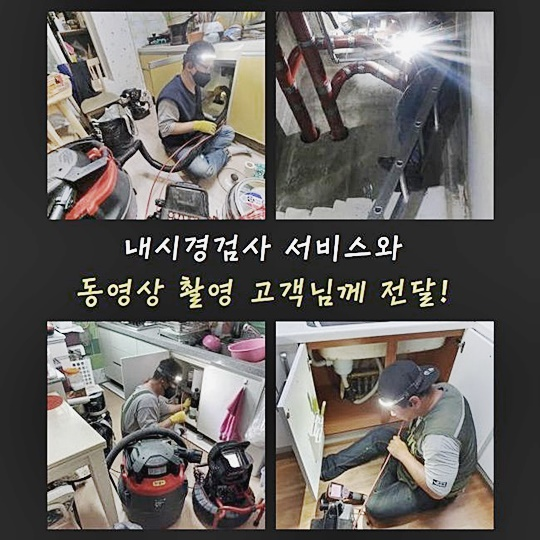
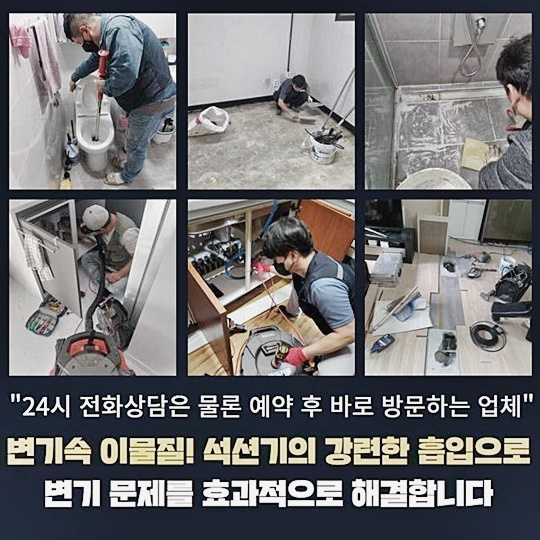
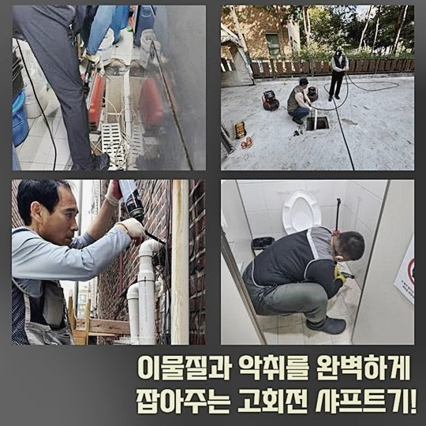
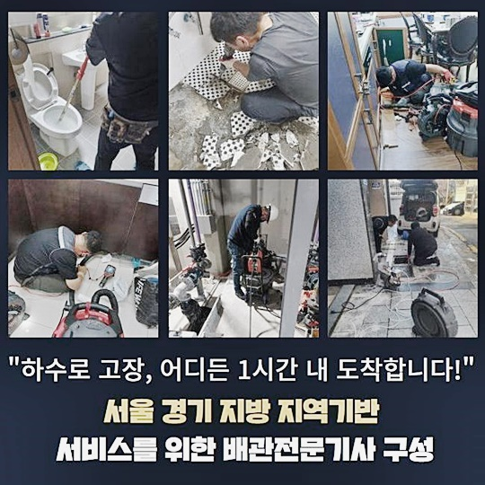
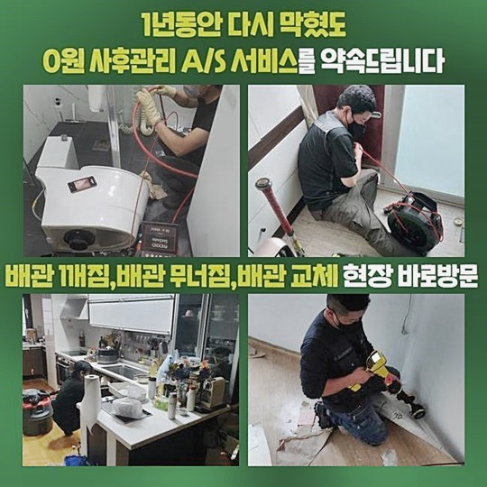

🏠 용인 양지면씽크대배수구역류 포곡읍 하수구청소장비 누수탐지
용인시 처인구 배관막힘 전문 시공 후기

📋 작업 개요
- 위치: 용인시 처인구, 수원시 영통구, 화성시 동탄
- 서비스 유형: 배관막힘, 하수구청소, 누수수리, 고압세척, 내시경점검
- 작업 일시:
- 업체명: 하수구수사대 (010-5615-2118)
🔍 문제 상황
인사드립니다
하수관로 막힘의 장소에 항상 염려없이 방문드리는 배수구막힘 팀입니다
예전에 의뢰인께서 다목적공간 하수관에 고장이 생겼다고 연락을 주셨기때문에 작업장에 찾아뵈었어요
용인 양지면씽크대배수구역류 포곡읍 하수구청소장비 누수탐지
물빠짐이 전혀 이루어지지 않더니 불쾌한냄새까지 올라와 황급히 저희 전문가에게 연락을 주셨습니다
저희 전문기사님은 관련 문제공간에 방문하여 물이 흐르지 않는 문제점의 근거를 알아보고 깨끗하게 처리해 드렸습니다
어느 방식으로 배수관막힘의 요인을 발견해서 수리했는지 같이 보면서 안내해드릴게요
혹여라도 비슷한 경우에 마주하게되면 놀라지말고 오늘 다뤘던 정보를 숙지하면 도움이 되실거예요
저희 수리업체가 찾아간 장소는 빌라단지로 해당 주거지의 다목적공간에 세탁기 하수파이프가 막혀서 고장났다고 전해주셨어요
고객의 말을 듣고 현장을 둘러보니 불쾌한 냄새와 함께 비눗물이 올라오며 역류하는 사태가 일어났어요
뚫기에 앞서 근본적인 이유를 분석하기 위해 불쾌한 하수구 악취는 어느 때부터 인지하시게 되었는지 자세히 여쭈어 보았습니다

🔎 원인 분석
💡 전문가 진단: 정밀 진단 장비를 사용하여 슬러지의 고착 여부를 판명하고 타격/세척 작업을 실시했습니다.
고객께선 정확히 기억은 안나지만 대략 한달 전쯤부터 물이 흐르는 것이 속도가 줄었었다고 희미하게나마 생각난 그대로 설명하셨어요
하수파이프 막힘이 발생한다면 주로 돌연해 일이 벌어졌다고 여기시지만 사실상 이 현장처럼 전조 현상이 있어요
그렇지만 이 문제를 별다른 문제라 생각하지 않으면서 무시하고 지나쳐 결국엔 이와 같이 배수되지 않는 사태까지 나타나게 된거죠
물을 소비하는 위치라면 배수관로에서 퍼지는 심각한 냄새가 아닐지라도 세면기나 싱크대등 악취가 퍼질 수 있게 되죠
역한 냄새가 올라온다는 것 이는 바로 배수구 안쪽에서 더러운 물질들이 썩어가는 암시라고 생각한다면 장애가 생겼다는 걸 연상하기 쉬울거예요
작업장에 방문해 배수를 진행했더니 의뢰인께서 언급하신것과 같이 세제거품들이 거꾸로 흐르면서 악취도 올라오기 시작했어요
이런식으로 하수배관 나쁜냄새가 풍기면 내부의 불순물을 없애는 작업이 필요하므로 우선적으로 석션장비로 최초 흡수 과정을 처리해드렸습니다
석션기기는 집안에서 활용하시는 깊은 부분에 더러운 물질 청소는 까다롭지만 입구쪽에 있는 물과 불순물을 없애는 것은 수월했습니다
저희 베테랑은 어떤 문제장소든 체계없이 다양한 작업들을 행하는 대신에 단계적 작업으로 쓸데없는 절차를 생략하고 있습니다
배관 카메라 장비를 배치할 수도 있겠지만 크게 막히지 않았다면 흡입장비로 대체로 상황이 처리될 수 있습니다
저희 베테랑이 작업장에 방문후에 어느 방식으로 상황을 대처하느냐에 따라 결국엔 소비자의 비용으로 계산되다보니 신경쓰고 있습니다
저희 전문기사님은 어느 장소든 요인을 철저하게 점검 한 후 문제를 풀어나가는 동안 의뢰인분들의 경비 부담까지 생각하여 부적절한 절차를 진행하지 않습니다

🔧 작업 과정
첫째로 석션기구를 사용하여 파이프 안쪽의 더러운 물질을 끄집어내는 작업들을 시행하고나니 작은돌같은 이물질들이 확인되었습니다
찌꺼기를 점검하니 하수관 속 악취를 야기하는 다른 찌꺼기인 슬러지덩어리가 배관내에 존재한다는 걸 짐작할 수 있었습니다
그리하여 배수관 내시경도구를 동원해 장애원인인 더러운 물질이 어느곳에 얼마나 많이 누적되어 있는지 낱낱이 확인해보기로 했습니다
배수구 내시경기기는 얇고 긴 튜브 끝쪽에 카메라장비와 라이트가 하나의 세트로 붙어있고 디스플레이가 설치되어 있습니다
길고 어두컴컴한 배수관 내부의 상태를 즉시 살펴볼 수 있으므로 문제를 파악해 깔끔하게 해소할 수 있도록 지원해주는 기구입니다
하수관 안쪽에 투입하니 이물질 덩어리들이 눈에 띄었고 작은돌덩이 비슷한 물질도 발견할 수 있었어요
저희 팀이 방문한 곳은 이처럼 배수관 깊숙이 장애를 유도하는 오염물은 배수관 세척기구가 투입되기 까다로워
연장 호스를 추가로 연결하여 청소하거나 샤프트 기구를 활용하여 갈아내고 닦아내는 처리를 합니다
저희 팀은 이처럼 실무 경험이 풍부하여 이유들을 밝혀내는 데 지체하지 않고 문제를 발견해도 효과적인 수단으로 없앨 수 있기 때문에 의뢰인의 불안을 확실하게 처리해 드려요
이렇게 방식이 결정된 후엔 지체하지 않고 배수구 안쪽을 씻어내며 찌꺼기를 처리해 하수파이프 악취가 퍼져서 신경쓰였던 막힘의 요소를 해소시켜요
한번만 시도하고 끝내는 것이 아닌 수차례 다시 시도해 시도한 후 하수가 제대로 배출되는지 배수시험으로 점검 한 후
다시 하수관 내시경 기기를 투입해 조사하면서 남은 오염물은 없는지 말끔히 씻겨졌는지 조사하게 됩니다
저희 전문가가 수리했던 문제구역은 반복해서 배수장애를 일으키는 것을 점검하여 완벽하게 깨끗함이 진단되면 절차를 종료하게 됩니다
배관에서 끄집어낸 이물질이 이만큼이나 많아 역겨운 냄새가 퍼지고 찌꺼기가 퇴적되면서 역류도 발생했습니다
이따금씩 부엌싱크와 붙어있는 하수관로의 경우 조리하면서 생기게 된 기름 잔재들이 하수배관에 점점 들러 붙어가며 기름덩이 또는 식재료 찌꺼기들이 보이기도 합니다
이런 조건에서는 하수관 구조가 세탁기 쪽과 싱크대아래의 하수파이프가 연결되어 있으므로 싱크볼에서 사용된 물들이 세탁공간의 하수관으로 솟구치는 현상들이 나타나기도 합니다
이 상황은 어려운 조건이라서 저희 팀처럼 전문적인 업체만 수리할 수 있는 문제이기 때문에 고약한 냄새가 배관에서 퍼져나오며 배수 흐름이 순조롭지 않다고 여겨진다면 위에서 검토한 상황처럼 막힘문제가 일어나기 전 증세라는 것을 잊지마세요
배수장애가 나타나기 전 전문업체에 점검을 요청하신다면 방지하는 것이 가능하다는 사실을 참고해주시면 좋을 듯 합니다


✅ 작업 완료
방문하기전에도 유선연락을 통해 도움을 드리며 방문하고 나서도 꼼꼼한 진단을 하여 의뢰자분 댁에 알맞은 고객 맞춤 지원을 선보이고 있습니다
제대로 된 방식으로 배관 막힘을 해결하길 권유드립니다 혹여라도 불합리한 작업 방식으로 가정에서 처리를 해보려고 하시는데
되려 여건을 심각하게 만드는 경우가 흔한일이기에 저희 수리업체로 재상담을 자주 주시고 있어요
가정집에서 문제가 풀린다면 좋겠으나 상태가 악화되는 일을 방지하기 위해선 상담을 최우선으로 받아 보는 것이 바람직한 선택이에요
상담 창구는 24시간 열려있어요 언제든지 문의주신 후 문제를 해결하시길 바랍니다



⚠️ 하수구 배관 막힘 예방 및 관리 가이드
- ✅ 머리카락, 비닐, 물티슈 등 물에 분해되지 않는 이물질은 절대 흘려보내지 마세요.
- ✅ 기름기 많은 식기는 설거지 전 키친타올로 먼저 기름때를 닦아내세요.
- ✅ 주기적으로 배수구에 뜨거운 물을 가득 부어주어 유지방 고착을 방지하세요.
- ✅ 작업 후 1년 이내 재발 시 무상 A/S 보증 서비스를 제공합니다.
💡 핵심 정리
- 확실한 장비 작업(내시경 점검 및 샤프트 스케일링)으로 원인을 뿌리 뽑습니다.
- 작업 후 1년 이내에 동일한 부위 재발 시 100% 무상 A/S 서비스를 보장합니다.
- 서울 · 경기 · 인천 전 지역에 24시간 언제든 긴급 출동할 수 있도록 항시 대기 중입니다.
❓ 자주 묻는 질문 (FAQ)
🚨 용인시 처인구 배관막힘 문제로 고민이신가요?
정확한 원인 진단과 확실한 시공으로 재발 없는 해결을 약속드립니다.
24시간 긴급 출동 | 서울 · 경기 · 인천 전지역 | 1년 내 재발 시 무상 A/S